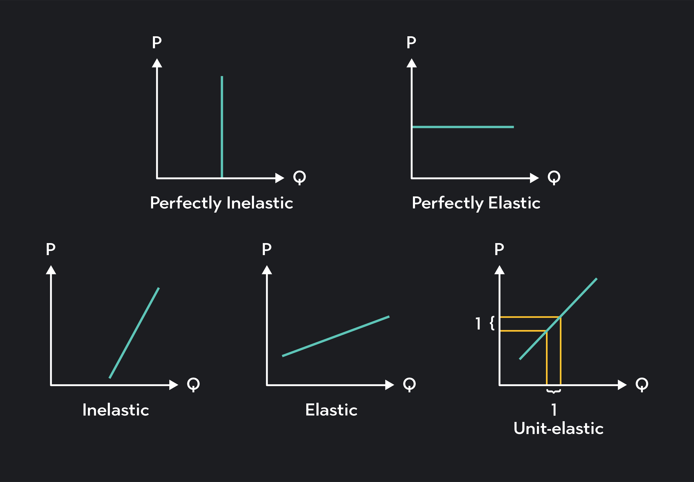
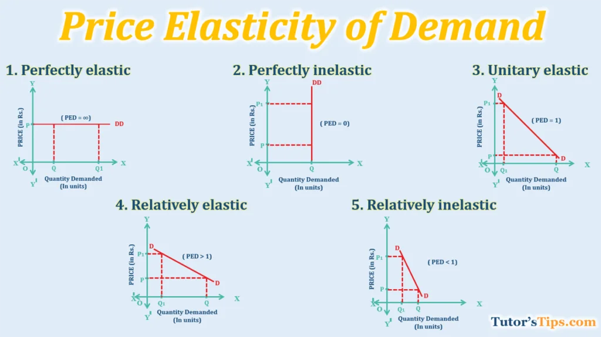

AP-ELASTICITY NG DEMAND AT SUPPLY.
Elastidad - pamamaraan upang masukat ang pagtugon ng mga mamimili at nagtitinda sa pagbago ng presyo
Es at Ed
- pagsukat ng porsiyento ng pagtugon ng mamimili/nagtitida sa bawat porsiyento sa pagbabago ng presyo
Uri ng Elastidad
- Elastic
- Di-Elastic
- Unitary
- Ganap na Elastik
- Ganap na Di-elastik
Elastik
- kailangan mas malaki ang naging bahagdan ng pagtugon ng quantity demanded/quantity supplied kaysa sa bahagdan ng pagbabago ng presyo.
- /E/ > 1
- Mga produktong maraming kapalit o kahalili, Ex. softdrinks
- %△Q > %△P
Di-elastik
- kailangan maliit ang naging bahagdan ng quantity demanded/quantity supplied kaysa sa bahagdan ng presyo. Kabaliktad lang ito ng Elastik
- /E/ < 1
- Halimbawa: Gamot
- %△Q < %△P
Unitary
- Pareho ang bahagdan ng pagbabago ng presyo sa bahagdan ng quantity demanded at quantity supplied
- /E/=1
- Walang tiyak na halimbawa
- %Qs = %Qp
Ganap na elastik/Perfectly elastic
- Anumang pagbabago sa presyo ay magdudulot ng infinite na pagbabago sa Qd/Qs
- /E/= ∞
- Halimbawa: chocolate, fruits
Ganap na Di-Elastic / Perfectly Inelastic
- Kabaliktaran ng perfectly elastic.
- |E| = 0
- Halimbawa: medical / safety needs
Grapiko ng elasticity:


Formula:
𝐸𝑝=(%Δ𝑄)/(%Δ𝑃)
%Δ𝑄=[(𝑄2−𝑄1)/(𝑄1+𝑄2)/2]×100
%Δ𝑃=[(𝑃2−𝑃1)/(𝑃1+𝑃2)/2]×100